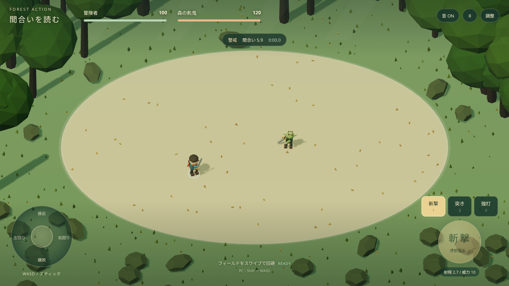
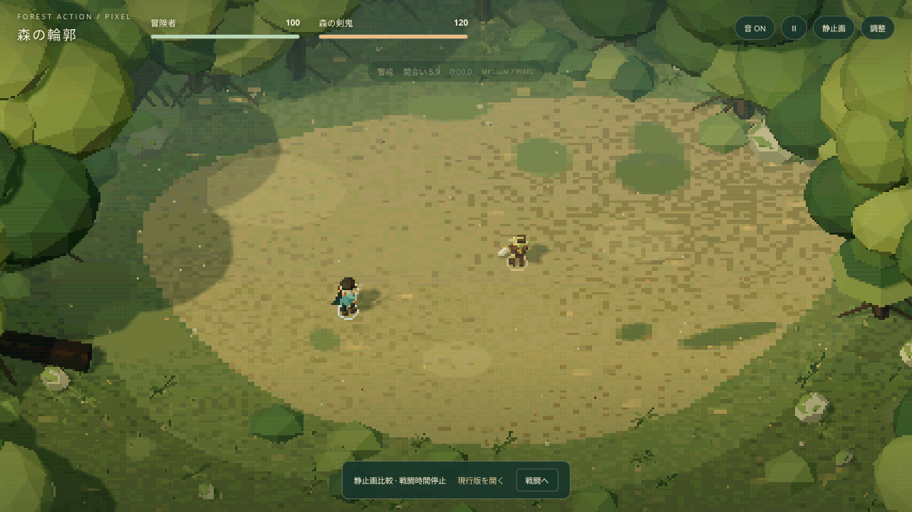
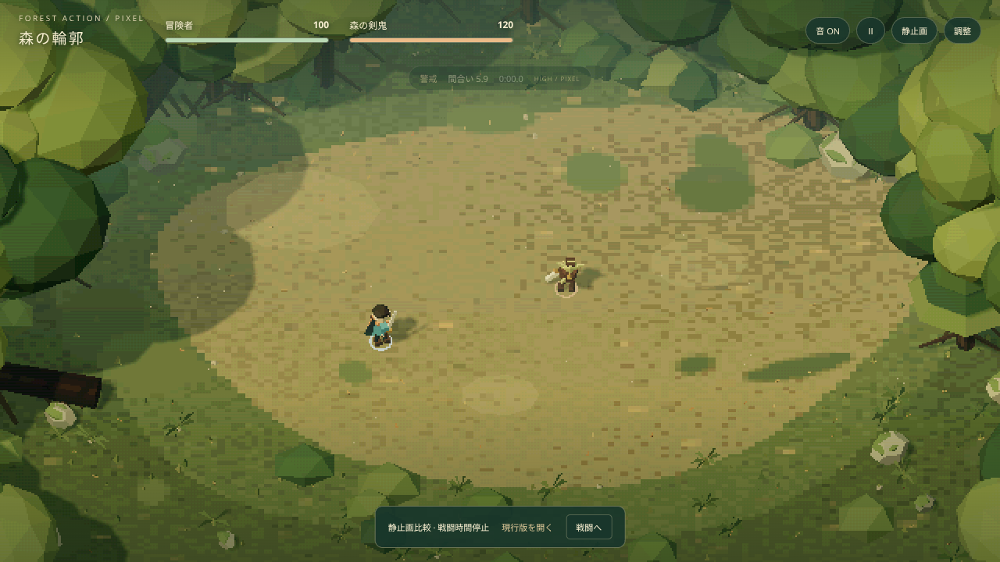
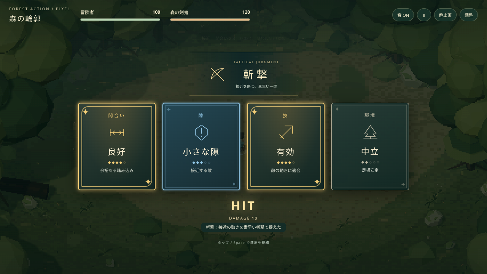

同じ戦い、違う森。
同じ初期キャラクター配置・カメラ・戦闘時間0のスクリーンショットです。3Dの描画だけを変更し、戦闘とカード判定を維持しています。画像をタップすると元のサイズで確認できます。
現行版とピクセル版




Low / Medium / High



内部解像度は画面比率とDPRで変わります。ピクセル版の「静止画で描画を比較」→「調整」で、同じ状態のまま切り替えられます。Lowは細かな敵動作が読み取りにくくなるため、戦闘の評価にはMediumまたはHighも比較してください。
カードは鮮明なまま
